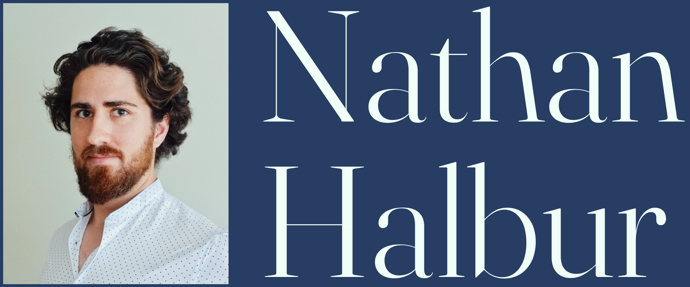

Click here to
view my
singing-related
résumé.
I am a bass-baritone
interested in opera, song, early music,
new music, and choral singing.
I have performed semi-improvised
opera with Grammy winner Esperanza Spalding, provided
the voice of the Grinch for
the Boston Pops, been a soloist on
Carnegie Hall's Perelman Stage in a Requiem world
prémiere, toured with
Grammy-nominated choir Skylark on their enigmatic
program Sub Rosa, embodied an Infernal Spirit in Monteverdi's
L'Orfeo with Pegasus Early Music, and sung
numerous solo and choral works by
J.S. Bach with Emmanuel Music, Boston Baroque, and
Cantata Singers.
My compositions and arrangements include works for solo voice,
choir, orchestra, and vocal jazz ensemble. I am half of
experimental lo-fi pop duo DREAMGLOW.
In my free time I enjoy
rollerskating—sometimes to &
from gigs!—and hiking.
SOLO SINGING:
Click
here for a SoundCloud playlist.
COMPOSITIONS:
The
Blue Bird
AATTBB a
cappella
Why,
what is Tybalt? soprano +
piano
Two
Peace Songs SATB +
orchestra
ARRANGEMENTS:
"Honeybee" SATB a cappella
"Santa
Baby" SSSAAB a
cappella
DREAMGLOW:
mélo-fi
EMAIL:
halburnathan@gmail.com
SOCIAL MEDIA:
facebook
instagram
Last updated 12 July 2022.
This website was created in HTML by Nathan Halbur.
The typefaces used are Fraunces (Undercase Type), HK Grotesk
(Hanken Design Co.), & Plantin (Monotype).